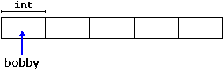

|
Section 3.4 Dynamic memory. |
 |
|
| |
|
Section 3.4 Dynamic memory. |
|
|
| |
Until now, in our programs, we have only had as much memory as we have requested in declarations of variables, arrays and other objects that we included, having the size of all of them to be fixed before the execution of the program. But, What if we need a variable amount of memory that can only be determined during the program execution (runtime)?, for example, in case that we need an user input to determine the necessary amount of space.
The answer is dynamic memory, for which C++ integrates the operators new and delete.
 Operators new and delete are exclusive of C++. More
ahead in this same section are shown the C equivalents for these operators.
Operators new and delete are exclusive of C++. More
ahead in this same section are shown the C equivalents for these operators.
|
Operators new and new[ ]
In order to request dynamic memory it exists the operator new.
new goes followed by a data type and optionally the number of elements
required within brackets []. It returns a pointer to the beginning of the
new block of assigned memory. Its form is:
pointer = new typeor
pointer = new type [elements]The first expression is used to assign memory to contain one single element of type. The second one is used to assign a block (an array) of elements of type.
int * bobby;in this case, the operating system has assigned space for 5 elements of type int in the heap and it has returned a pointer to its beginning that has been assigned to bobby. Therefore, now, bobby points to a valid block of memory with space for 5 int elements.
bobby = new int [5];
You could ask what is the difference between declaring a normal array and assigning memory to a pointer as we have just done. The most important one is that the size of an array must be a constant value, which limits its size to what we decide at the moment of designing the program before its execution, whereas the dynamic memory allocation allows to assign memory during the execution of the program using any variable, constant or combination of both as size.
The dynamic memory is generally managed by the operating system, and in the multitask interfaces can be shared between several applications, so there is a possibility that the memory exhausts. If this happens and the operating system cannot assign the memory that we request with the operator new, a null pointer will be returned. For that reason is recommendable to always verify if after a call to instruction new the returned pointer is null:
int * bobby;
bobby = new int [5];
if (bobby == NULL) {
// error assigning memory. Take measures.
};
Operator delete.
Since the necessity of dynamic memory is usually limited to concrete moments within
a program, once this one is no longer needed it shall be freed so that it become
available for future requests of dynamic memory. For this exists the operator
delete, whose form is:
delete pointer;or
delete [] pointer;The first expression should be used to delete memory alloccated for a single element, and the second one for memory allocated for multiple elements (arrays). In most compilers both expressions are equivalent and can be used without distinction, although indeed they are two different operators and so must be considered for operator overloading (we will see that on section 4.2).
// rememb-o-matic
#include <iostream.h>
#include <stdlib.h>
int main ()
{
char input [100];
int i,n;
long * l, total = 0;
cout << "How many numbers do you want to type in? ";
cin.getline (input,100); i=atoi (input);
l= new long[i];
if (l == NULL) exit (1);
for (n=0; n<i; n++)
{
cout << "Enter number: ";
cin.getline (input,100); l[n]=atol (input);
}
cout << "You have entered: ";
for (n=0; n<i; n++)
cout << l[n] << ", ";
delete[] l;
return 0;
}
|
How many numbers do you want to type in? 5 Enter number : 75 Enter number : 436 Enter number : 1067 Enter number : 8 Enter number : 32 You have entered: 75, 436, 1067, 8, 32, |
This simple example that memorizes numbers does not have a limited amount of numbers that can be introduced, thanks to that we request to the system as much space as it is necessary to store all the numbers that the user wishes to introduce.
NULL is a constant value defined in manyfold C++ libraries specially designed to indicate null pointers. In case that this constant is not defined you can do it yourself by defining it to 0:
#define NULL 0It is indifferent to put 0 or NULL when checking pointers, but the use of NULL with pointers is widely extended and it is recommended for greater legibility. The reason is that a pointer is barely compared or set directly to a numerical literal constant except precisely number 0, and this way this action is symbolically masked.
The function malloc
It is the generic function to assign dynamic memory to pointers. Its prototype is:
void * malloc (size_t nbytes);where nbytes is the number of bytes that we want to be assigned to the pointer. The function returns a pointer of type void*, reason why we have to type cast the value to the type of the destination pointer, for example:
char * ronny;This assigns to ronny a pointer to an usable block of 10 bytes. When we want to assign a block of data of a different type other than char (different from 1 byte) we must multiply the number of elements desired by the size of each element. Luckyly we have at our disposition the operator sizeof, that returns the size of a data type of a concrete datum.
ronny = (char *) malloc (10);
int * bobby;This piece of code assigns to bobby a pointer to a block of 5 integers of type int, this size can be equal to 2, 4 or more bytes according to the system where the program is compiled.
bobby = (int *) malloc (5 * sizeof(int));
The function calloc.
calloc is very similar to malloc in its operation, its main
difference is in its prototype:
void * calloc (size_t nelements, size_t size);since it admits 2 parameters instead of one. These two parameters are multiplied to obtain the total size of the memory block to be assigned. Usually the first parameter (nelements) is the number of elements and the second one (size) serves to specify the size of each element. For example, we could define bobby with calloc thus:
int * bobby;Another difference between malloc and calloc is that calloc initializates all its elements to 0.
bobby = (int *) calloc (5, sizeof(int));
The function realloc.
It changes the size of a block of memory already assigned to a pointer.
void * realloc (void * pointer, size_t size);pointer parameter receives a pointer to an already assigned memory block or a null pointer, and size specifies the new size that the memory block shall have. The function assigns size bytes of memory to the pointer. The function may need to change the location of the memory block for that the new size can fit, in that case the present content of the block is copied to the new one to guarantee that the existing data is not lost. The new pointer is returned by the function. If it has not been posible to assign the memory block with the new size it returns a null pointer but the pointer specified as parameter and its content remains unchanged.
The function free.
It releases a block of dynamic memory previously assigned using
malloc, calloc or
realloc.
void free (void * pointer);This function must only be used to release memory assigned with functions malloc, calloc and realloc.
You may obtain more information about these functions in the C++ reference for cstdlib.
| © The C++ Resources Network, 2000-2001 - All rights reserved |
 Previous:
Previous:3-3. Pointers |
 index |
 Next:
Next:3-5. Structures. |